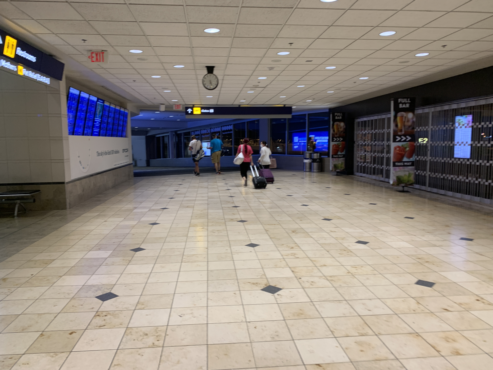
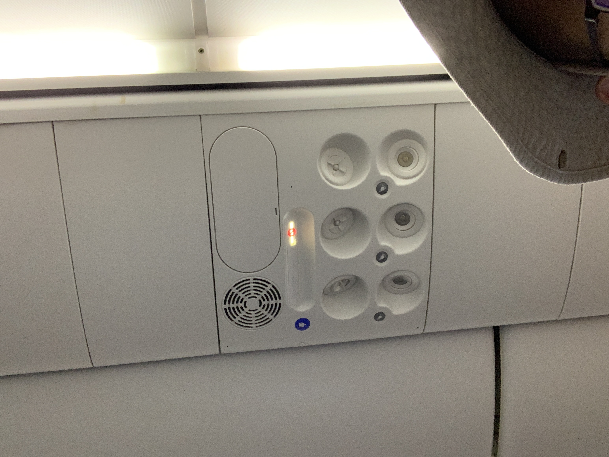
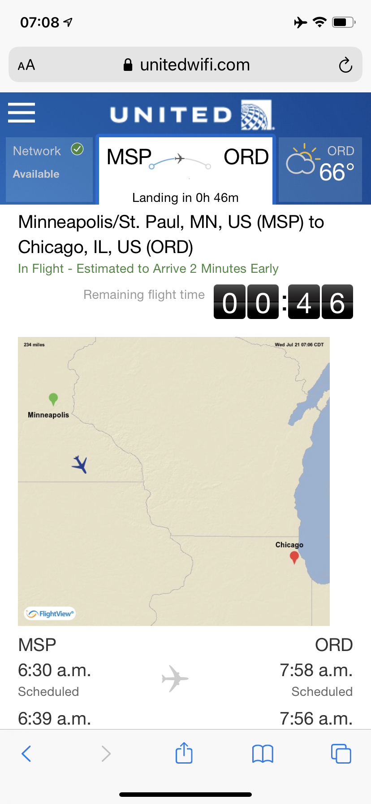
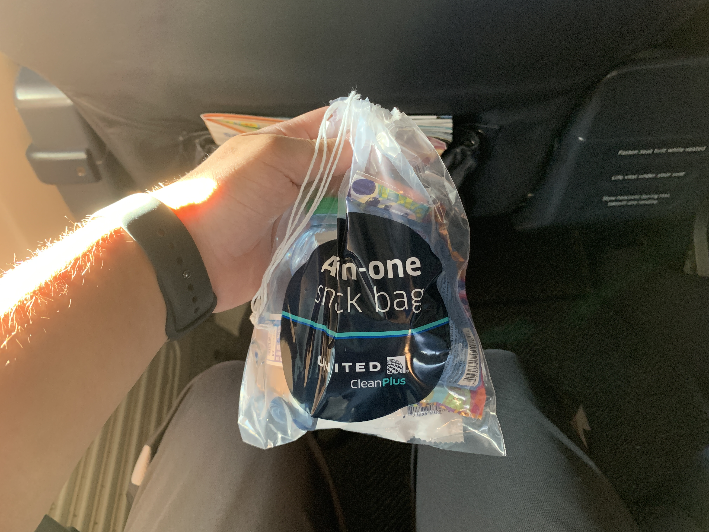

United Airlines Boeing 737-900ER Minneapolis to Chicago in First Class
All Posts: Welcome Back to the Skies
- This Post: United Airlines Boeing 737-900ER Minneapolis to Chicago in First Class
- United Airlines Boeing 777-300ER Chicago to Orlando and Back in First Class (Polaris Seat)
- United Club B6, Chicago O'Hare
Below is Post 1.
This will be my first time flying since the onset of the Covid pandemic. I did not fly at all in 2020.
I made a video about this trip. Check it out!
I got to the airport around 5:00am for a 6:30am departure. Since I was only planning to be out for a full day, I just parked in the daily lot. It’s going to cost me $42 bucks… then it’s a walk to the elevator to the skyway to the terminal.
Downstairs there’s a sign showing what’s open for security, etc. I just went to the check-in desk to print out new boarding passes, even though I checked in last night. The purpose is because I only had mobile boarding passes. At the check-in area, I was asked to wait for an open kiosk, but multiple people cut in line and got the agent a little frustrated, so I told her I was just going to use the Premier Access line (as part of my Premier status).
 Security was faster than I expected as someone flying with TSA Precheck. Within minutes, I was cleared and walking into Concourse E. Though I had to eat breakfast first; I grabbed a meal at McDonalds for convenience. On a Wednesday morning, none of the TSA lines appeared long.
Here’s my plane. N67827 will fly UA754 to Chicago today; it flew as UA783 last night into Minneapolis.
Unfortunately, I was using my iPhone Xr…
The seats were the same as a Baltimore to Chicago flight I took in October 2019 as well as a Minneapolis to Denver flight I took in December 2019 (minus the TV and Boeing Sky Interior). Being late in the boarding process, I just borrowed a picture from aircraft #3889 (N62889). That’s the view from 4B.
And a blanket was provided for this short flight, not that I needed it.
Gosh, this poor bird definitely needs some maintenance. Look at the armrest holding the tray table. Bad part was I couldn’t even shove it down (not that I was going to try). It wasn’t a problem for this flight, though.
Here’s that Spirit A319-132 to Los Angeles (I think).
And the view from 4A. Not a bad engine view.
 The overhead panel is standard, not that I was looking for much.
And the Spirit pushed back before we did, they had the same departure time. Boarding was taking a while on this plane, probably as there were likely a lot of inexperienced travelers. The purser gave instructions on what to do after boarding and stated that a lot of passengers had connections (I had one that was 1 hour 9 minutes… eek!).
And with the jetbridge removed, we were almost ready as the FAs rushed to prepare the cabin.
And that’s a Delta Boeing 757-351 with PW2000 engines. One of the rare B753s.
We pushed back almost 10 minutes late, started engines, and went out.
Takeoff from Runway 17, a slight left immediately after we went airborne, and into the haze from the northwestern wildfires, particularly horrible this year.
 Here’s screenshots of the United Wi-Fi page, including flight information. I didn’t see the price for that, not that I needed it.
 Thanks to the pandemic, we were offered an “All-in-one snack bag” which contained water, pretzel, and Stroopwafel. I didn’t eat anything in there and saved it for later.
I did have a coffee, one sugar.
After drinks were passed out, I went to the lavatory. Unsurprisingly we have the really small sink that’s a trademark of most narrowbodies.
And I grabbed a picture of the wing in the middle of cruise.
 We parked at Gate B6, right next to a sistership. From there, I dashed out of the plane and to B16 for my next flight.
We parked at Gate B6, right next to a sistership. From there, I dashed out of the plane and to B16 for my next flight.
Here is the flight status details from the United App.
Onwards to my next flight!
Read more: United Airlines Boeing 777-300ER Chicago to Orlando and Back in First Class (Polaris Seat)
Post 2 in this series
All Posts: Welcome Back to the Skies
- This Post: United Airlines Boeing 737-900ER Minneapolis to Chicago in First Class
- United Airlines Boeing 777-300ER Chicago to Orlando and Back in First Class (Polaris Seat)
- United Club B6, Chicago O'Hare